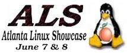
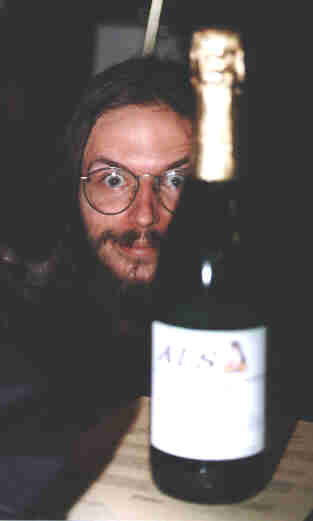
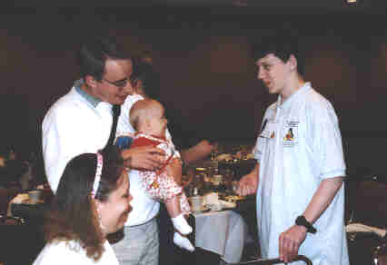
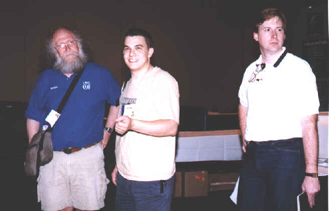

![[ TABLE OF CONTENTS ]](../gx/indexnew.gif)
![[ FRONT PAGE ]](../gx/homenew.gif)



by Andrew Newton
Trade shows and expos are not at all uncommon in the computer industry. But not since the early days of microcomputers, when CP/M was King and toggle switches were the user interface, have user groups been heavily involved. So in the era of powerful non-commercial software, couldn't the trade shows also be non-commercial?
We, the members of the Atlanta Linux Enthusiasts (ALE), found out the answer is yes. Originating from correspondence with Linux International for some local help for Linux vendors at COMDEX and our own Linux demo fest (called the "Geek-Off") a year earlier, we put together a non-commercial, user group organized trade show. On June 7, 1997, we put on the largest Linux vendor showcase to date.
Get Started With The Essentials
So let's say you, being the Linux activist of your community, want to do your bit to spread the word. Where would you start?
Although we didn't necessarily do this, we learned there are two essential things to get a Linux trade show off the ground: 1) a time and place, and 2) a checking account. And in the words of our own Marc Torres, once you have those two items, "the rest grows from there."
It was a given that we would hold the Atlanta Linux Showcase as close to COMDEX as possible. After all, this whole idea came from helping out the Linux vendors at COMDEX. Plus the idea of getting the COMDEX crowd was good. We theorized that many people flying in for COMDEX would stay over the following weekend to save on air fare. And they could easily justify it if they were attending another computer show.
Picking the place was a little more troublesome, but not impossible. We finally decided on The Inforum because it was located only blocks away from the venue for COMDEX, was in downtown Atlanta, and well known to many.
Finally, the checking account is very important. As it turns out we didn't do this immediately and paid the price in countless hours of meetings discussing logistics. A checking account is important because it gives you a place from which to send money and, more importantly, a place to receive money. People like it better when they can write checks to "Big Time Linux Event" instead of "Bob Smurd."
One of the major inhibitors behind our acquisition of a checking account was our incredible lack of knowledge when it comes to the law. After all, we are a bunch of computer jocks, not attorneys. We had many seemingly endless discussions on issues such as incorporation, non-profit status, tax codes, the right to bear arms, etc. In the end, David Hamm, one of our most active members, just ended up going to a bank and getting a new checking account under his control. Incidentally, David became the treasurer.

David Miller eyes a bottle of ALS Ale. - Photo by Amy Ayers
Put Time On Your Side
Unfortunately, we didn't. Of course, we had the COMDEX target date to shoot for giving us little time between our mobilization and the event. If you can pick a date over six months out, do so. There are multiple reasons for this, most of which have to do with reserving space.
First, you must reserve space somewhere to hold your event. We lucked out in our case, but many venues will require booking many months ahead of time, especially the ones that don't often cost so much money such as college campuses and state buildings.
Second, you must reserve space in print media for advertising and publicity. While we were able to get ads in our local computer magazines and the event listed in some calendars, we did miss deadlines elsewhere. You may have noticed there were no advertisements for the Atlanta Linux Showcase in Linux Journal. We missed the deadline. In addition, it takes time to grease the wheels for free publicity.
A brief word about FREE PUBLICITY - There is no such thing; you'll work for every last bit of it. Free publicity means getting listed in upcoming events calendars and maybe an article or two about Linux in the local paper with a small plug at the end for the event. If you do take the time to pay for advertising, use the advertising representative as a way of getting your event some extra publicity in that publication. Many publications put on the appearance that their articles are completely disjoint from their advertising on the basis of journalistic ethics, but with the exception of SSC that isn't true.
A brief word about paid advertising - It is like buying a used car. What an ad rep puts on a rate card isn't necessarily the price you have to pay. Try talking them down. Again, this doesn't apply to SSC.
Organize Your Volunteers
We divided our group into two major camps, organizers and volunteers. The first were the people that planned the event out for months and did a lot of the leg work. The second were the people that showed up the day of the show and manned the registration desk, checked badges, etc.
You don't want to have too many organizers as it becomes difficult to manage a large group of people over a large span of time. We divided up our group into teams of 3 or 4, with many people being on 2 or more teams. This gave us what philosophical management types like to call cross-functional teams. By having more than one person on a team, it helped insure no one person was the only source of information or action.
We had the following teams:
In hind sight, we should have also created a "Registration" team to handle all the registrations for both walk-in and pre-paid registrations. Our answer to this was to make the Talks team and the Logistics team work together, which worked but not as smoothly as we would have liked. It is better to have a group of people who are solely in charge of registration and aren't distracted with other problems.
We didn't solicit for volunteers until a month before our show. In retrospect, it probably should have been two months. We gave our volunteers a briefing the day before the Showcase and had a work schedule already printed when they arrived. We also required them to work 2 three-hour shifts for manageability purposes and to keep the number of volunteers to a minimum but in the end solicited for some more at the last minute (thanks Ben and Vicki).
A brief note about Volunteers - Treat them well, because they are working for free. And if you do that, most will go the extra mile treating the attendees well and pulling those extra shifts or duties you didn't anticipate (thanks James). Also put your "people-person" types at the registration desk where they will likely be needed the most. More personable people will be able to sell t-shirts and so forth much more easily (thanks Karen). Finally, thank your volunteers. Everybody likes to be told they've done a good job (thanks everyone else).
Another seemingly weird thing we did was to make our volunteers pay for the honor to work our event. It seems odd, but it worked. The idea was to have them show us they weren't going to volunteer and then back out on us at the last minute. In exchange for their $30, they got a polo shirt and were able to see all the presentations at a lower price than anyone else. And the cash flow didn't hurt either. While we didn't mandate this for the organizers, it wouldn't be a bad idea. However, all the organizers did have to pay for their own shirts and many loaned hundreds of dollars to the effort.

Linus, Tove and Patricia meet Zeph Hull, a showcase volunteer. - Photo by Amy Ayers
Coordinate Vendors
Organize your vendor team so everybody knows which person is calling what company but only one person is calling each. It is nice for everyone to know the status of a potential vendor. It is not nice to have 3 separate people make 3 separate cold calls to the same potential vendor.
When contacting vendors, use the phone as your primary means of communications and not e-mail. While it seems e-mail would work, it is human nature to give it a much lower priority than a phone call. We found many companies that ignored our e-mail's responded quite positively to our phone calls.
One of the things we should have done sooner was bill the vendors. We charged each vendor $400 for a booth and sent them an invoice. While we were expecting one week turn turnarounds on payment, the business world doesn't work that way. In many cases, paperwork and payments can take up to 30 days to get through the accounting offices of some companies.
Get People To Talk
We solicited for speakers and presenters over the comp.os.linux.announce news group. This had to be done multiple times, but eventually the offers started rolling in. We also drew upon some local talent. And in many cases, the vendors also wanted to give presentations.
Getting speakers to volunteer was the easy part. Getting them to the Showcase was the difficult part. We had to solicit money from sponsoring companies and the vendors in order to pay for the travel and lodging expenses for Linus Torvalds, Eric Raymond, David Miller, Richard Henderson, Miguel de Icaza, and the rest of the crew (and we still owe a debt of gratitude to Digital and Caldera for all they did in this department).
Once the money was appropriated, travel plans and hotel accommodations were made - at least that's how it works in the ideal world. A lot of the travel costs were floated on the credit cards of organizers until they could be reimbursed. Do make plane reservations and travel arrangements as far ahead of time as possible; you can save on air fare that way.
Work The System
This involves taking advantage of perks and getting the extras out of the people with whom you
are doing business. For example, we decided to also rent some conference rooms at the Days Inn
which was just next store to The Inforum. These conference rooms were used for Birds Of A
Feather sessions and impromptu meetings by our attendees. In order to secure a good price on
the room rental, we made an agreement with the hotel management that we would guarantee they
got a certain number of room bookings based on our event. We then set-up that hotel as our
"Official" hotel and asked most of our out-of-town guests to try the Days Inn first. In addition,
our attendees were able to get a reasonable rate at a downtown hotel. Our guest speakers were
also booked there.
Genie Travel
Another good idea would be to solicit the help of other Linux users groups. Often other users groups that are geographically close by may be able to help. Be sure to get them in on it early in the planning stage. For instance, we solicited SALUG (Southern Alabama) and CHUGALUG (Athens, GA), albeit at the last minute. Coordinating with other users groups also insures that the Linux community isn't throwing a trade show every month in towns only 100 miles apart (this stretches the resources of the Linux vendors and the enthusiasm these shows generate)..
One last thing that can help is to have a Sugar-Daddy. In our case it was Linux International. Jon "Maddog" Hall of Linux International helped get us credit through which we were able secure our lease on the rooms at The Inforum. If you ask him nicely, he may do the same for you.
Have Fun
Keep in mind that organizing such an event is very hard word and requires a lot of time. We estimate over 2000 man hours were spent by ALE members putting together our show. But with any luck, your user group will be able to pull off a grand Linux event. And remember, have fun. Don't hold your trade show to make money. Do it to spread the word of Linux and to cavort with other like-minded Linux hobbyists.
Finally, we'd like to thank all our volunteers, vendors, speakers, and organizers for helping out with the Atlanta Linux Showcase. If you are interested in any videos of the presentations at the 1997 Atlanta Linux Showcase or t-shirts and polo shirts, please visit our web site at http://www.ale.org/showcase/. And if you have any questions, please feel free to send us e-mail at ale-expo@cc.gatech.edu.

Greg Hankins hangs out with Maddog and David Hamm. - Photo by Amy Ayers